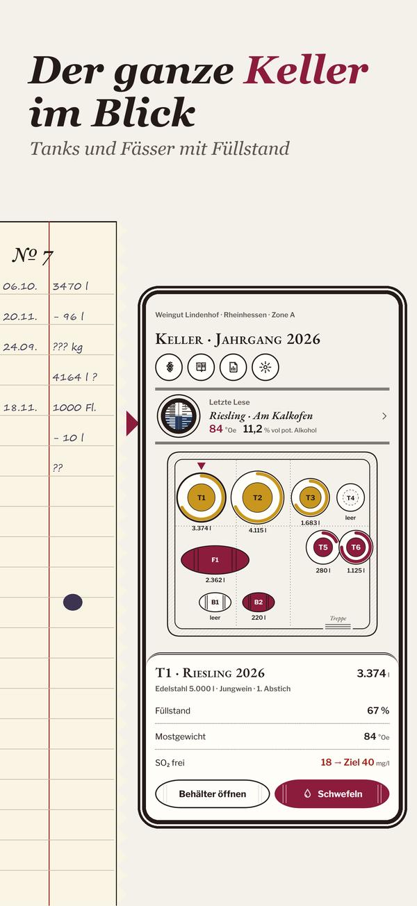
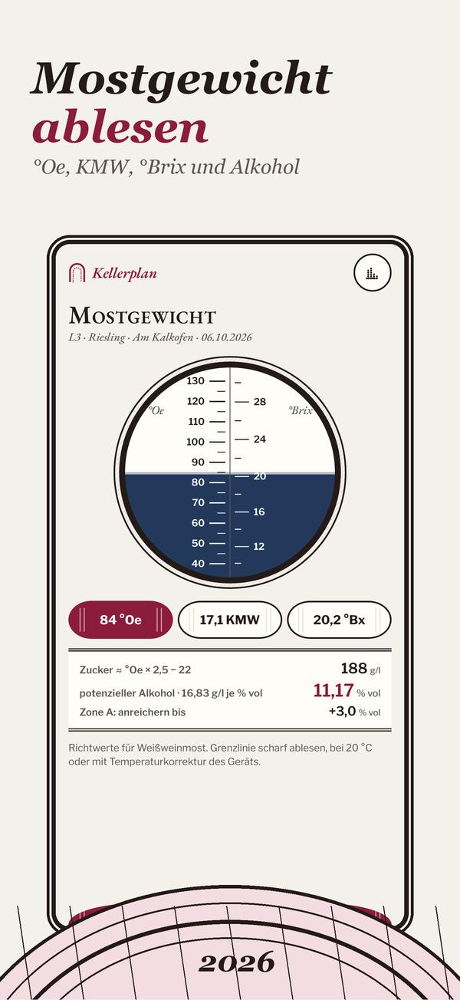
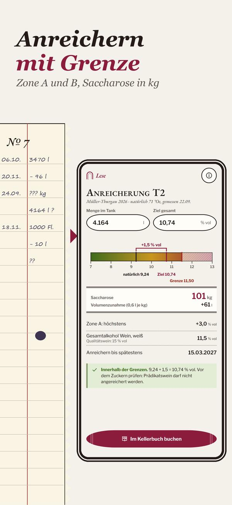
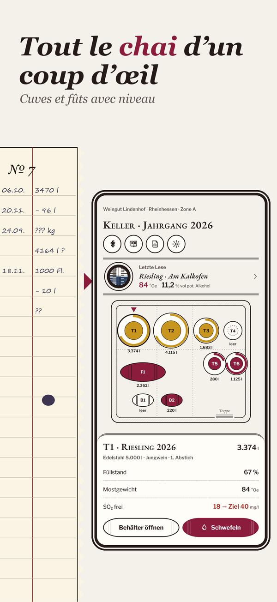
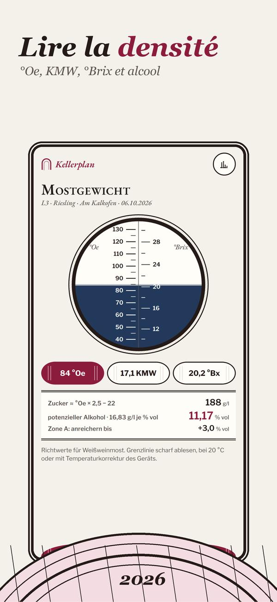
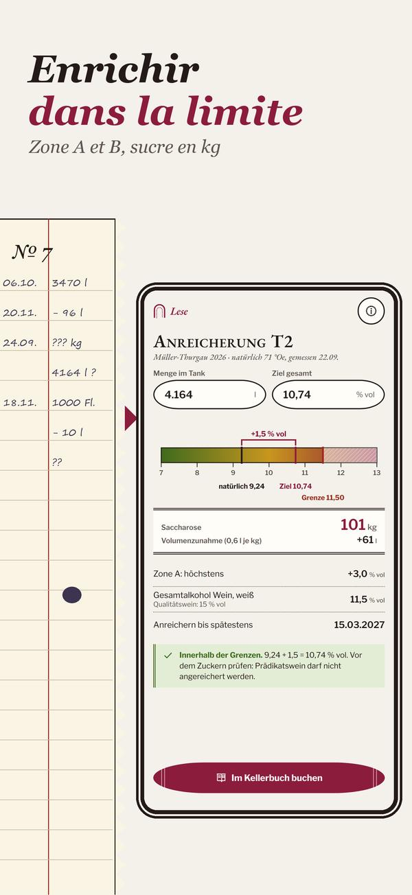
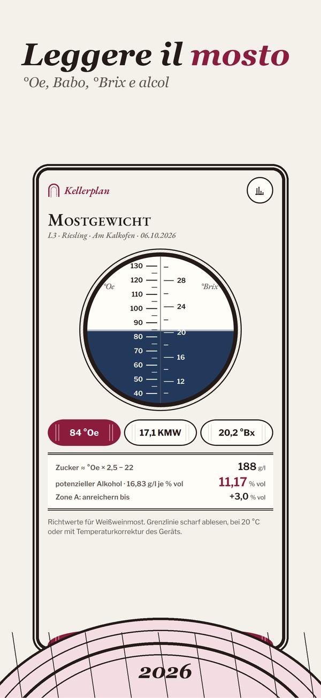
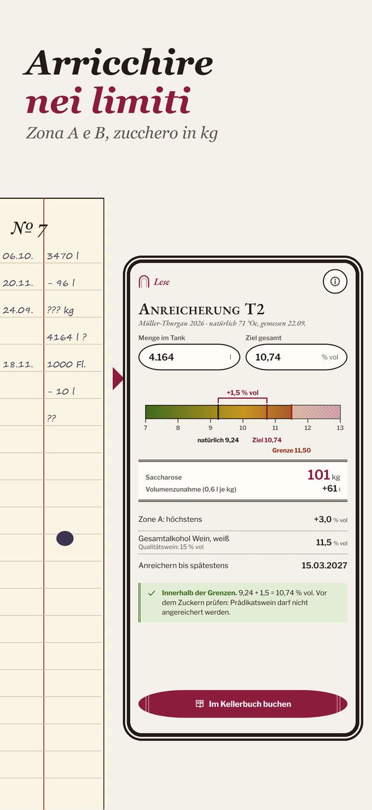

Lesegut ist das Kellerbuch für Weingüter und Nebenerwerbswinzer in Deutschland und Österreich. Der Kellerplan zeigt jeden Tank und jedes Fass mit Füllstand und Wein. Lesepartien mit Mostgewicht werden zu potenziellem Alkohol, Anreicherung und Schwefeln rechnet Lesegut gegen die Grenzen Ihrer Weinbauzone. Jede Bewegung landet chronologisch im Kellerbuch, die Bilanz stimmt mit den Behältern überein.



Kellerplan: Tanks und Fässer mit Füllstand und Weinfarbe
Refraktometer-Ansicht: °Oechsle, KMW und °Brix, potenzieller Alkohol
Anreicherung mit Höchstgrenzen der Zone A und B
Schwefeln: Zugabe in mg/l, Gramm und Gesamtwert gegen die Grenze
Lesepartien mit Parzelle, Menge, Säure und Mostgewicht
Verschnitt mit Anteilen, Alkohol und Säure
Füllung mit Flaschen, Verlust und Losnummer
Kellerbuch chronologisch mit laufender Bilanz, PDF auf dem iPhone
Lesegut est un registre de cave pour les petits domaines. Le plan du chai montre chaque cuve et chaque fût avec son niveau. Les lots de vendange deviennent alcool potentiel, enrichissement et sulfitage sont calculés selon votre zone viticole. Chaque mouvement entre au registre chronologique et le bilan correspond aux contenants.



Plan du chai : cuves et fûts avec niveau et couleur du vin
Vue réfractomètre : °Oechsle, KMW et °Brix, alcool potentiel
Enrichissement avec limites par zone
Sulfitage : ajout en mg/l, en grammes et total face à la limite
Lots de vendange avec parcelle, poids, acidité et densité
Assemblage avec parts, alcool et acidité
Mise en bouteille avec pertes et numéro de lot
Registre chronologique avec bilan courant, PDF sur l’iPhone
Lesegut è un registro di cantina per piccole aziende vitivinicole. La pianta della cantina mostra ogni vasca e botte con il livello. I lotti di vendemmia diventano alcol potenziale, arricchimento e solfitazione si calcolano secondo la zona viticola. Ogni movimento entra nel registro cronologico e il bilancio corrisponde ai recipienti.


Pianta della cantina: vasche e botti con livello e colore del vino
Vista rifrattometro: °Oechsle, Babo (KMW) e °Brix, alcol potenziale
Arricchimento con limiti per zona
Solfitazione: aggiunta in mg/l, grammi e totale rispetto al limite
Lotti di vendemmia con particella, peso, acidità e grado
Assemblaggio con quote, alcol e acidità
Imbottigliamento con perdite e numero di lotto
Registro cronologico con bilancio, PDF sull’iPhone